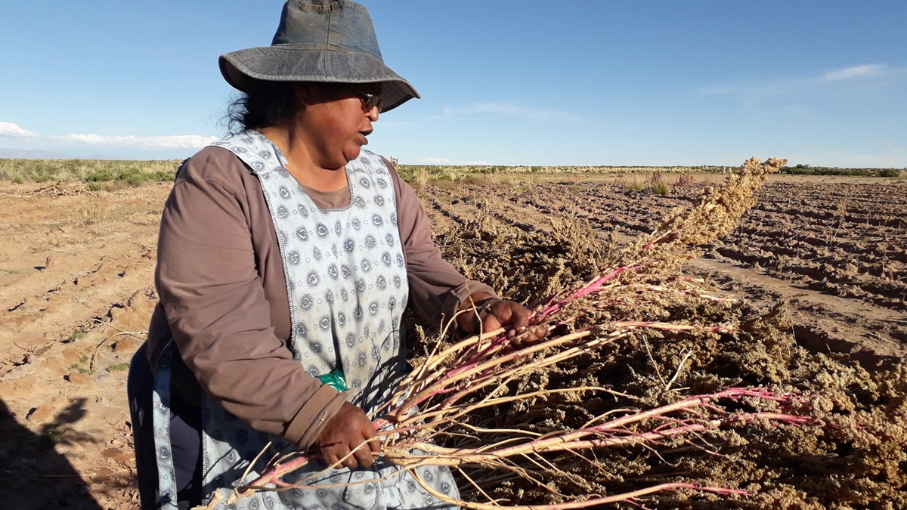
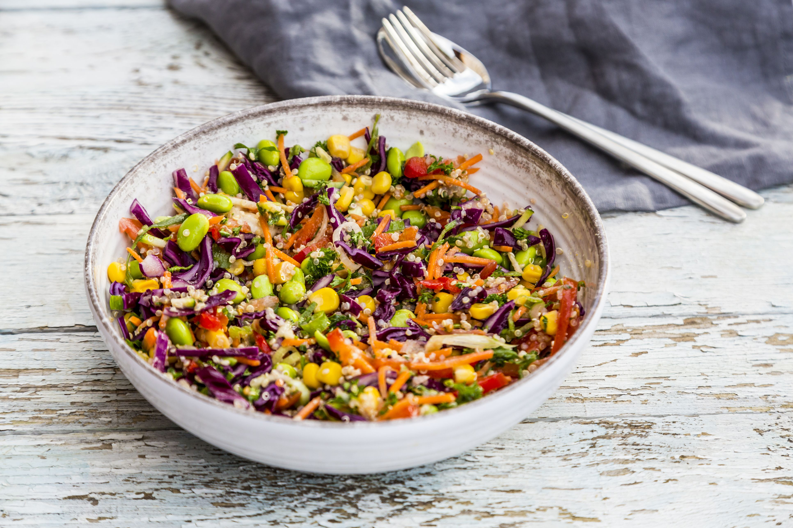

Superfood's Dark side - Quinoa Farmers Case Study
by Vaishnav Nair
by Vaishnav Nair
While vegetarians and health fanatics promote the intake of the superfood quinoa because of its high nutritional value, it is often tailor-made for their benefits by companies and corporations. Although usually prepared like a grain, Quinoa is a pseudo-cereal
related to the spinach, chard, and beet family.

In 2013, United Nations declared the International Year of Quinoa, demonstrating how this small, nutritious grain became a global favourite. Quinoa originated from South America and has remained the staple food for indigenous people of the Andean region
over centuries because of its high nutritional values. The leading producers of Quinoa in the world are Bolivia and Peru, together producing more than 80% of Quinoa globally, followed by Ecuador, the USA, and China. Quinoa
has always been considered a neglected crop – its cultivation was mainly for domestic consumption and was considered a "peasant" food with no commercial value. However, in the 1970s, Quinoa's high nutritional values caught
the eye of American and European consumers as an exotic and healthy superfood. The 'discovery' of the crop led to a rise in global demand, leading to a rapid increase in its market price. The price of Quinoa has drastically
increased by 600% from 2000 to 2008 and led to a rise in Quinoa's market price led to increased crop production as farmers saw it as an economic opportunity. Yet, Quinoa-producing countries like Bolivia remained one of the
poorest and most food-insecure countries in South America. The national consumption of Quinoa in Bolivia fell by 4% from 2006 to 2011 despite a rise in production. With a population of 9.1 million people, Bolivia is the poorest
country in the Andean region, as 80% of the rural population in the country lives below the poverty line. This paradox points to an essential aspect of the quinoa production chain that needs discussion.

Under rising demand for Quinoa, Bolivian agrarians face pressures and problems from different sides as follows:
- Increasing their production to accommodate a growing international market while safeguarding traditional knowledge.
- Preserving biodiversity.
- Meeting household needs.
- Making a profit.

The increasing price of Quinoa has made it difficult for local people to purchase the staple food, thereby forcing them to abandon Quinoa for other staples like rice and pasta. However, the rise in global demand for Quinoa has brought income to a specific
segment of the economy; it has affected the food security situation of the Bolivian population. Though the export of Quinoa has increased from 1998 to 2009, domestic consumption has decreased. The primary foods that contribute
to the daily caloric intake of Bolivians have been shifting from Quinoa to bread and pasta. The boom of Quinoa is occurring at the cost of local people's access to the staple food that has been part of their food culture for
years.

Furthermore, increasing demand for Quinoa and globalization are changing land use and increasing the crop's genetic homogeneity. The change in land use poses a threat to the genetic diversity of Quinoa and its human culture. (The
rapid expansion of quinoa production and entry of new producers is threatening both the ecological sustainability and the social integrity of local communities. The rise of quinoa production has also led to a shift from traditional
small-scale manual cropping to large-scale mechanized cropping methods. The transition from an integrated farming system to a more mechanized system with reduced biodiversity and increased use of tillage has changed the landscape
and put pressure on the quality of the soil. With the worldwide demand for Quinoa increasing, we should be more aware of its consequences and pay heed to the social and environmental justice issues it raises.